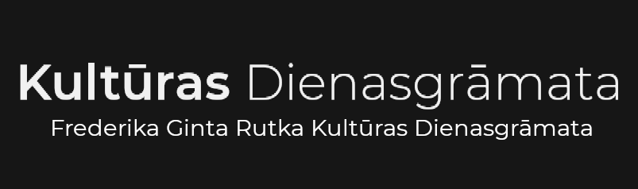

<!DOCTYPE html>
<html>
<head>
<style>
@import url('https://fonts.googleapis.com/css2?family=Montserrat:wght@300&display=swap');
</style>
<title>Kultūras Dienasgrāmata</title>
	<link rel="stylesheet" href="161021.css" />
</head>

<body>
<aside>
<div class="menu">

	<nav>
		<ul id="ieraksti">
			<li class="ieraksti"><a class="ieraksti" href="../../kult_dien/1.html">Ieraksti</a></li>
		</ul>
	</nav>
	<ul style="text-align: center; list-style-type: none; margin-top: 40px; padding: 0;" class="101021">
		<li class="101021"><a class="101021" href="../../kult_dien/101021/101021.html">Kora "Kamēr..." 25 gadu jubilejas koncerts</a></li>
	</ul>
</aside>

<article>
	<section>
		<h1 style="text-align:center; font-size: 30px;">Ērika Ešenvalda un Selgas Mences meistarklase</h1>
			<ul>
				<li>Kad: 16.10.2021 14:00</li>
				<li>Kur: ZOOM platformā</li>
			</ul>
		<h2>Konteksts:</h2>
			<p>Pagāšgad, 2020. gadā, es pieteicos jauniešu kompozīcijas konkursam Alojā. Mans uzdevums bija iesūtīt tautasdziesmas apdari "Es redzēju jūriņāji". Dziesma netika konkursā, bet visiem tā dalībniekiem piedāvāja piedalīties kompozīcijas meistarklasē.</p>
		<h2>Īsumā notikušais</h2>
			<p>13:55 caur, Gmail iesūtītu linku, es pieslēdzos ZOOM pasākumam. 14:00 ekrānā parādījās komponisti Ēriks Ešenvalds un Selga Mence. Abi komponisti ir svarīgi Latvjas mūzikas attīstībā. Ēriks Ešenvlads ir zināms gan Latvijā, gan starptautiski ar savu interesanto pierakstu vokālajā un simfoniskajā mūzikā. Selga Mence ir zināma ar savu tautasdziesmu apdarēm, kuras ir daudzas izskanējušas Dziesmu svētkos.</p>
			<p>Meistarklases laikā abi komponisti analizēja iesūtītos darbus un deva ieteikumus, kā kaut ko labāk uzrakstīt. Manuprāt, svarīgākās iemaņas ir: Glissando pieraksts, no stiprās uz stipro takstdaļu, pareizrakstību, lai nebūtu, piemēram, La diez Fa mažorā, kur jābūt si bemol un ritma pierakstu, kurā jādomā par sitaminstrumentu skaņas spējām, kā arī balss spēkus, piemēram, ka alta lūzšanas skaņa ir si un do.</p>
			<p>Pēc meistarklases beigām tika paziņoti konkursa uzvarētāji un novadīta motivātiskā runa.</p>
		<h2>Notikumi</h2>
			<p>Visa meistarklase aizsākās ar konkursa žūrijas ievadrunu. Tajā viņi pateicās visiem, kas iesūtīja dziesmas, iesauca mūs par jaunās paudzes komponistiem un īsi pastāstīja, ka tika veikta vērtēšana. Vadītājiem bija skumji, ka pasākums Covid-19 apstākļu dēļ nenotika klātienē, Alojas Kultūras namā, kur būtu noticis bērnu koru koncerts ar šīm jaunajām dziesmām. Beigās, pirms iesākot pašu meistarklasi, komponisti mūs motivēja ar to, ka: "Konkurss nav rādītājs. Šajā konkursā jums ir cits rezultāts, bet citā konkursā, jums būs pavisam cits rezultāts!"</p>
			<p>Meistarklases prezeintāciju iesāka komponiste Selga Mence, analizējot jaunākās grupas darbus. Tajā viņa stāsīja, ka daudzas no šīm dziesmām bija parasta kora klasika, un tad iedrošināja mūs nerakstīt kā Jāzeps Vītols vai Jānis Cimze, bet izvest sevi cauri šiem darbiem un būt mūsdienīgiem. Tad stāstīja mums par glissando pierakstu, pareizrakstību, balssvedību, ritma pierkastu un precīziem paskaidrojumiem. Balssvedībā pārsvarā stāstīja par to, ka tautasdziesmas apdarē harmonijām jābūt tādām, lai vienmēr dzird oriģinālo tautasdziesmas melodiju. Precīzos paskaidrojumos stāstīja par, ja kādreiz ir vajadzība ieviest kādu stilisku remarku, tad tās paskaidrojumam ir jābūt precīzām un saprotamam, lai koriem nerastos jautājumi</p>
			<p>Pēc Selgas Mences prezentācijas aizsākās, manuprāt, meistarklases kulminācija, Ērika Ešenvalda vecāko grupu dziesmu analizēšana. No tieši šīs daļas es ieguvu visvairāk padomu saviem nākamajiem darbiem. Ē. Ešenvalds 	ieteica būt uzmanīgam, kad raksta notis, lai neveidojas oktāvas starp balsīm, izņemot, ja tā ir raita dziesma. Iedrošināja izmantot polifoniju biežāk. Ieteica padomāt par skanējumu un tekstu, lai nesanāk, ka tīri spraigai dziesmai ir lēns temps. Savā prezentācijā / analīzē arī stāstīja par balsi. Stāstīja, kā izdarīt tā, lai balss nepiekūst, par balsu reģistriem un tesitūru. Tad arī mācīja par dinamikas pierkastu notīs, kur vokālajai mūzikai tā ir virs notīm, bet instrumentālajai, zem notīm. No Ešenvalda anaīzes uzzināju par dažādu efektu izmantošanu, interesantu harmoniju veidošanu, balss proporcijām, solista izmantošanu. Ēriks Ešenvalds arī stāstīja par galvenās balss maiņu, proti, kad nevis soprāns dzied tēmu, bet alts vai bass, vai tenors. Viņa stāstījumā arī es uzzināju faktus par pašu kompnistu kā, Ešenvaldu mācīja svarīgs latviešu komponists Juris Karlsons un Ēriks Ešenvlads kādu laiku dziedāja Akadēmiskajā korī "Latvija", un mācīja dziedāšanu. Prezentācijas laikā ieteica mums, komponistiem, vienmēr izdziedāt katru balsi un saprast, vai mēs mākam nodziedāt, ko rakstām.</p>
			<p>Beigās tika paziņoti uzvarētāji. Es netiku 2. kārtā. Pirms meistarklases nobeigšanas, komponisti norunāja motivātisku runu, novēlēja veselību šajos grūtajos laikos un aicināja mūs piedalīties vēl un vēl, un nedomāt 	par rezultātu</p>
		<h2>Atsauksmes</h2>
			<p>Meistarklase bija interesanta. Ļoti labas pavadītas divas stundas. Kompnisti Ēriks Ešenvalds un Selga Mence novadīja perfekti. Vērtētu šo 5/5, jo saturs bija interesants, paskaidrojumi skaidri un jautājumu nebija. Ja šīs meistarklases ierakstu redzētu publiski, tad es ieteiktu to noskatīties jebkuram jaunajam komponistam un interesantam.</p>
	</section>
</article>

<footer>
<p>&copy; Frederika Ginta Rutka Kultūras Dienasgrāmata</p>
</footer>
</body>
</html>